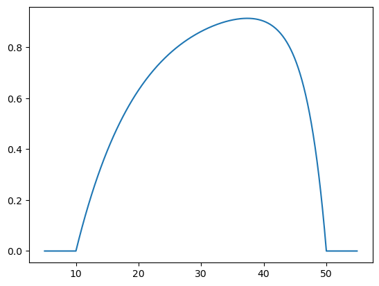
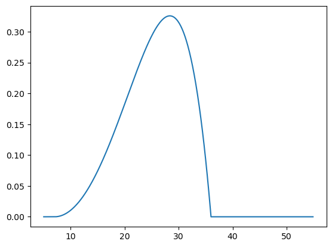
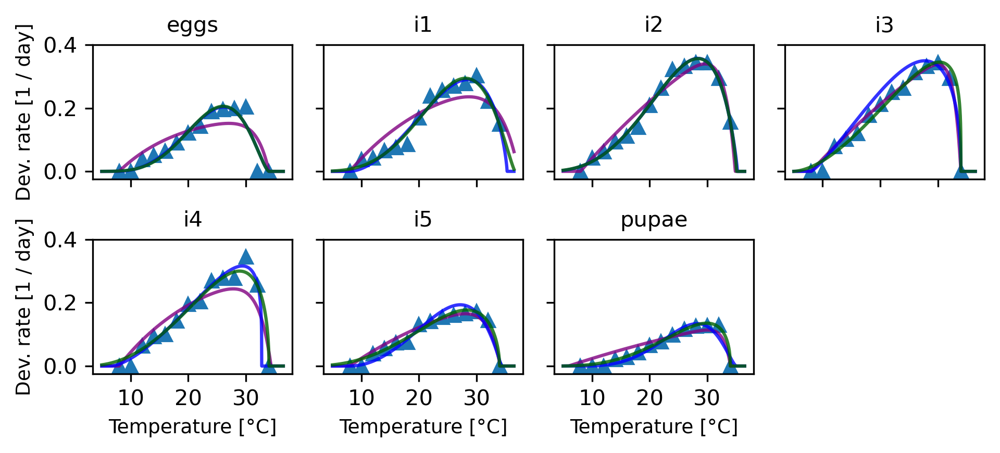

import numpy as np
import pandas as pd
import random
random.seed(42) # Set seed for reproducibility
from matplotlib import pyplot as plt
from scipy.optimize import minimize
from sklearn.model_selection import LeaveOneOutComparison of Briere and flexTPC models in insect development data
def briere1(T, Tmin=10.0, Tmax=50.0, c=1.0):
result = np.zeros(len(T))
cond = (Tmin < T) & (T < Tmax)
result[cond] = c * T[cond] * np.exp(np.log(T[cond] - Tmin) + 0.5 * np.log(Tmax - T[cond]))
return result
def briere2(T, Tmin=10.0, Tmax=50.0, c=1.0, b=2.0):
result = np.zeros(len(T))
cond = (Tmin < T) & (T < Tmax)
result[cond] = c * T[cond] * np.exp(np.log(T[cond] - Tmin) + np.log(Tmax - T[cond]) / b)
return result
# Fully biologically interpretable parametrization of flexTPC model.
def flexTPC(T, Tmin=10.0, Tmax=50.0, rmax=1.0, α=0.8, β=0.2):
result = np.zeros(len(T))
cond = (Tmin < T) & (T < Tmax)
s = α * (1.0 - α) / β**2
result[cond] = rmax * np.exp(s * (α * (np.log(T[cond] - Tmin) - np.log(α)) +
(1 - α) * (np.log(Tmax - T[cond]) - np.log(1 - α) )
- np.log(Tmax - Tmin)))
return result
# Exponential product curve.
def expprodcurve(T, Tmin=10.0, Tmax=50.0, c=1.0, kI=0.1, kU=0.5):
result = np.zeros(len(T))
cond = (Tmin < T) & (T < Tmax)
result[cond] = c * (1.0 - np.exp(-kI*(T[cond] - Tmin))) * (1.0 - np.exp(-kU*(Tmax - T[cond])))
return result
# Kumaraswarmy distribution TPC.
def kumaraswarmy(T, Tmin=10.0, Tmax=50.0, c=1.0, a=5.0, b=5.0):
result = np.zeros(len(T))
cond = (Tmin < T) & (T < Tmax)
τ = (T[cond] - Tmin) / (Tmax - Tmin)
result[cond] = c * τ**(a - 1) * (1.0 - τ**a)**(b - 1)
return resultTvals = np.arange(5, 55, 0.1)
plt.plot(Tvals, expprodcurve(Tvals, kI=0.1, kU=0.3))
def nloglik(θ, Tdata, rdata, model=flexTPC):
params, σ2 = θ[:-1], θ[-1]
Tmin, Tmax = θ[:2]
outside = (Tdata < Tmin) | (Tdata > Tmax)
inside = ~outside
n = len(rdata[inside])
if np.any(rdata[outside] > 0.0):
return np.inf
else:
return 0.5 * (n * np.log(2*np.pi*σ2) + np.sum((rdata[inside] - model(Tdata[inside], *params))**2 / σ2))
def AIC(nll, p):
return 2 * nll + 2 * p
def BIC(nll, n, p):
return 2 * nll + p * np.log(n)L. botrana development dataset
First, let’s compare the model performance in Briere’s original dataset.
botrana = pd.read_csv("briere_data_L_botrana.csv")
stages = ["eggs", "i1", "i2", "i3", "i4", "i5", "pupae"]botrana| T | n_eggs | eggs | n_i1 | i1 | n_i2 | i2 | n_i3 | i3 | n_i4 | i4 | n_i5 | i5 | n_pupae | pupae | |
|---|---|---|---|---|---|---|---|---|---|---|---|---|---|---|---|
| 0 | 8 | 0 | inf | 0 | inf | 0 | inf | 0 | inf | 0 | inf | 0 | inf | 0 | inf |
| 1 | 10 | 0 | inf | 28 | 25.9 | 14 | 23.2 | 0 | inf | 0 | inf | 0 | inf | 0 | inf |
| 2 | 12 | 77 | 26.8 | 48 | 23.4 | 23 | 16.1 | 15 | 12.7 | 12 | 15.7 | 11 | 25.5 | 0 | inf |
| 3 | 14 | 104 | 19.4 | 45 | 15.1 | 36 | 10.6 | 32 | 9.8 | 31 | 10.6 | 31 | 17.9 | 6 | 48.0 |
| 4 | 16 | 369 | 15.6 | 47 | 13.2 | 41 | 8.9 | 36 | 8.3 | 35 | 10.0 | 33 | 13.5 | 25 | 35.5 |
| 5 | 18 | 600 | 11.0 | 44 | 11.7 | 41 | 7.1 | 40 | 5.6 | 38 | 7.0 | 36 | 13.3 | 41 | 23.2 |
| 6 | 20 | 674 | 8.2 | 44 | 5.9 | 44 | 4.8 | 40 | 4.7 | 37 | 5.1 | 35 | 7.6 | 41 | 15.1 |
| 7 | 22 | 837 | 7.0 | 50 | 4.2 | 48 | 3.8 | 46 | 4.0 | 42 | 4.9 | 41 | 7.1 | 45 | 12.9 |
| 8 | 24 | 662 | 5.3 | 49 | 3.9 | 45 | 3.1 | 44 | 3.8 | 44 | 3.7 | 40 | 6.5 | 50 | 10.2 |
| 9 | 26 | 696 | 5.1 | 50 | 3.7 | 45 | 3.0 | 45 | 3.2 | 44 | 3.6 | 40 | 6.2 | 50 | 8.6 |
| 10 | 28 | 559 | 5.0 | 50 | 3.6 | 43 | 2.9 | 40 | 3.0 | 40 | 3.6 | 38 | 6.0 | 46 | 7.9 |
| 11 | 30 | 210 | 4.9 | 46 | 3.3 | 46 | 2.9 | 45 | 2.9 | 44 | 2.9 | 40 | 5.8 | 41 | 7.8 |
| 12 | 32 | 0 | inf | 47 | 4.5 | 43 | 3.4 | 42 | 3.4 | 38 | 3.9 | 26 | 6.9 | 45 | 7.7 |
| 13 | 34 | 0 | inf | 30 | 6.7 | 27 | 6.4 | 0 | inf | 0 | inf | 0 | inf | 19 | inf |
# Find initial estimates of minimum and maximum temperatures from data.
Tlims = {}
for i, stage in enumerate(stages):
T = botrana["T"][botrana[stage] < np.inf]
Tlims[stage] = (min(T) - 0.5, max(T) + 0.5)
print(stage, Tlims[stage])
# Set initial estimates of maximum trait value.
init_rmax = {'eggs': 0.2,
'i1':0.2,
'i2':0.2,
'i3':0.2,
'i4':0.2,
'i5':0.2,
'pupae':0.2}
# Set initial parameter values for all models.
initial_flex = {stage:[7.0, 36.0, init_rmax[stage], 0.8, 0.1, 0.015] for stage in stages}
initial_b1 = {stage:[7.0, 36.0, 7e-5, 0.015] for stage in stages}
initial_b2 = {stage:[7.0, 36.0, 7e-5, 2.0, 0.015] for stage in stages}
initial_epc = {stage:[7.0, 36.0, init_rmax[stage], 0.1, 0.3, 0.015] for stage in stages}
initial_kum = {stage:[7.0, 36.0, 0.5, 3, 2, 0.015] for stage in stages}eggs (11.5, 30.5)
i1 (9.5, 34.5)
i2 (9.5, 34.5)
i3 (11.5, 32.5)
i4 (11.5, 32.5)
i5 (11.5, 32.5)
pupae (13.5, 32.5)Tvals = np.arange(5, 55, 0.1)
plt.plot(Tvals, kumaraswarmy(Tvals, Tmin=7.0, Tmax=36.0, c=1.0, a=3, b=2))
loo = LeaveOneOut()
loo.get_n_splits(botrana["T"])14# Calculate leave-one-out cross validated log likelihood.
params = {"flexTPC":{}, "b1":{}, "b2":{}, "epc":{}, "kum":{}}
models = ["b1", "b2", "flexTPC", "epc", "kum"]
method = "Nelder-Mead"
loocv_nll = {model:{stage:[] for stage in stages } for model in models}
for i, y in enumerate(stages):
Tdata = np.array(botrana["T"])
rdata = 1.0 / np.array(botrana[y])
for train, test in loo.split(Tdata):
T_train, r_train = Tdata[train], rdata[train]
T_test, r_test = Tdata[test], rdata[test]
params["b1"][y] = minimize(nloglik, initial_b1[y],
bounds=[(0.0, 20.0),
(20.0, 60.0),
(0.0, 1.0),
(0, 1.0)],
args=(T_train, r_train, briere1), options={"maxiter":100000}, method=method)
θ = params["b1"][y]["x"]
loocv_nll["b1"][y].append(nloglik(θ, T_test, r_test, model=briere1))
params["b2"][y] = minimize(nloglik, initial_b2[y],
bounds=[(0.0, 20.0),
(20.0, 60.0),
(0.0, 1.0),
(1.0, 20.0),
(0, 1.0)],
args=(Tdata, rdata, briere2), options={"maxiter":100000}, method=method)
θ = params["b2"][y]["x"]
loocv_nll["b2"][y].append(nloglik(θ, T_test, r_test, model=briere2))
params["flexTPC"][y] = minimize(nloglik, initial_flex[y],
bounds=[(0.0, 20.0),
(20.0, 60.0),
(0.0, 1.0),
(0.0, 1.0),
(0.0, np.inf),
(0, 1.0)],
args=(Tdata, rdata, flexTPC), options={"maxiter":100000}, method=method)
θ = params["flexTPC"][y]["x"]
loocv_nll["flexTPC"][y].append(nloglik(θ, T_test, r_test, model=flexTPC))
params["epc"][y] = minimize(nloglik, initial_epc[y],
bounds=[(0.0, 20.0),
(20.0, 60.0),
(0.0, 1.0),
(0.0, np.inf),
(0.0, np.inf),
(0, 1.0)],
args=(Tdata, rdata, expprodcurve), options={"maxiter":100000}, method=method)
θ = params["epc"][y]["x"]
loocv_nll["epc"][y].append(nloglik(θ, T_test, r_test, model=expprodcurve))
params["kum"][y] = minimize(nloglik, initial_kum[y],
bounds=[(0.0, 20.0),
(20.0, 60.0),
(0.0, np.inf),
(1.0, np.inf),
(1.0, np.inf),
(0, 1.0)],
args=(Tdata, rdata, kumaraswarmy), options={"maxiter":100000}, method=method)
θ = params["kum"][y]["x"]
loocv_nll["kum"][y].append(nloglik(θ, T_test, r_test, model=kumaraswarmy))/var/folders/g8/wjqhnz1n01d5l4pdv8cnykw40000gp/T/ipykernel_90008/2868019315.py:10: RuntimeWarning: divide by zero encountered in log
return 0.5 * (n * np.log(2*np.pi*σ2) + np.sum((rdata[inside] - model(Tdata[inside], *params))**2 / σ2))
/var/folders/g8/wjqhnz1n01d5l4pdv8cnykw40000gp/T/ipykernel_90008/2868019315.py:10: RuntimeWarning: divide by zero encountered in divide
return 0.5 * (n * np.log(2*np.pi*σ2) + np.sum((rdata[inside] - model(Tdata[inside], *params))**2 / σ2))
/var/folders/g8/wjqhnz1n01d5l4pdv8cnykw40000gp/T/ipykernel_90008/2868019315.py:10: RuntimeWarning: invalid value encountered in scalar add
return 0.5 * (n * np.log(2*np.pi*σ2) + np.sum((rdata[inside] - model(Tdata[inside], *params))**2 / σ2))# Fit to entire dataset.
params = {"flexTPC":{}, "b1":{}, "b2":{}, "epc":{}, "kum":{}}
models = ["b1", "b2", "flexTPC", "epc", "kum"]
method = "Nelder-Mead"
for i, y in enumerate(stages):
Tdata = np.array(botrana["T"])
rdata = 1.0 / np.array(botrana[y])
params["b1"][y] = minimize(nloglik, initial_b1[y],
bounds=[(0.0, 20.0),
(20.0, 60.0),
(0.0, 1.0),
(0, 1.0)],
args=(Tdata, rdata, briere1), options={"maxiter":100000}, method=method)
params["b2"][y] = minimize(nloglik, initial_b2[y],
bounds=[(0.0, 20.0),
(20.0, 60.0),
(0.0, 1.0),
(1.0, 20.0),
(0, 1.0)],
args=(Tdata, rdata, briere2), options={"maxiter":100000}, method=method)
params["flexTPC"][y] = minimize(nloglik, initial_flex[y],
bounds=[(0.0, 20.0),
(20.0, 60.0),
(0.0, 1.0),
(0.0, 1.0),
(0.0, np.inf),
(0, 1.0)],
args=(Tdata, rdata, flexTPC), options={"maxiter":100000}, method=method)
params["epc"][y] = minimize(nloglik, initial_epc[y],
bounds=[(0.0, 20.0),
(20.0, 60.0),
(0.0, 1.0),
(0.0, np.inf),
(0.0, np.inf),
(0, 1.0)],
args=(Tdata, rdata, expprodcurve), options={"maxiter":100000}, method=method)
params["kum"][y] = minimize(nloglik, initial_kum[y],
bounds=[(0.0, 20.0),
(20.0, 60.0),
(0.0, np.inf),
(1.0, np.inf),
(1.0, np.inf),
(0, 1.0)],
args=(Tdata, rdata, kumaraswarmy), options={"maxiter":100000}, method=method)/var/folders/g8/wjqhnz1n01d5l4pdv8cnykw40000gp/T/ipykernel_90008/2868019315.py:10: RuntimeWarning: divide by zero encountered in log
return 0.5 * (n * np.log(2*np.pi*σ2) + np.sum((rdata[inside] - model(Tdata[inside], *params))**2 / σ2))
/var/folders/g8/wjqhnz1n01d5l4pdv8cnykw40000gp/T/ipykernel_90008/2868019315.py:10: RuntimeWarning: divide by zero encountered in divide
return 0.5 * (n * np.log(2*np.pi*σ2) + np.sum((rdata[inside] - model(Tdata[inside], *params))**2 / σ2))
/var/folders/g8/wjqhnz1n01d5l4pdv8cnykw40000gp/T/ipykernel_90008/2868019315.py:10: RuntimeWarning: invalid value encountered in scalar add
return 0.5 * (n * np.log(2*np.pi*σ2) + np.sum((rdata[inside] - model(Tdata[inside], *params))**2 / σ2))T = np.arange(5, 36.5, 0.001)
#plt.figure(figsize=(5, 6.5), dpi=300)
#plt.figure(figsize=(4.33, 6.5), dpi=300)
alpha=0.8
fig, axarr = plt.subplots(2, 4, figsize=(6.5, 3), dpi=300, sharex=True, sharey=True)
for i, y in enumerate(stages):
ax = axarr[i // 4, i % 4]
Tdata = np.array(botrana["T"])
rdata = 1.0 / np.array(botrana[y])
ax.plot(Tdata, rdata, '^')
# Plot fitted curves by models.
par = params["b1"][y]["x"]
ax.plot(T, briere1(T, *par[:-1]), color="firebrick", alpha=alpha)
par = params["b2"][y]["x"]
ax.plot(T, briere2(T, *par[:-1]), color="orange", alpha=alpha)
par = params["flexTPC"][y]["x"]
ax.plot(T, flexTPC(T, *par[:-1]), color="darkgreen", alpha=alpha)
#par = params["epc"][y]["x"]
#ax.plot(T, expprodcurve(T, *par[:-1]), color="purple", alpha=alpha)
#par = params["kum"][y]["x"]
#ax.plot(T, kumaraswarmy(T, *par[:-1]), color="blue", alpha=alpha)
ax.set_ylim(-0.025, 0.4)
if y in ("eggs", "i4"):
ax.set_ylabel("Dev. rate [1 / day]", fontsize=9)
if y in ("i4", "i5", "pupae"):
ax.set_xlabel("Temperature [°C]", fontsize=9)
ax.set_title(y, fontsize=10)
axarr[-1, -1].axis("off")
plt.tight_layout()
plt.savefig("botrana.svg")
plt.savefig("botrana.tiff")
plt.savefig("botrana.png")
plt.savefig("botrana.pdf")
T = np.arange(5, 36.5, 0.001)
#plt.figure(figsize=(5, 6.5), dpi=300)
#plt.figure(figsize=(4.33, 6.5), dpi=300)
alpha=0.8
fig, axarr = plt.subplots(2, 4, figsize=(6.5, 3), dpi=300, sharex=True, sharey=True)
for i, y in enumerate(stages):
ax = axarr[i // 4, i % 4]
Tdata = np.array(botrana["T"])
rdata = 1.0 / np.array(botrana[y])
ax.plot(Tdata, rdata, '^')
# Plot fitted curves by models.
#par = params["b1"][y]["x"]
#ax.plot(T, briere1(T, *par[:-1]), color="firebrick", alpha=alpha)
#par = params["b2"][y]["x"]
#ax.plot(T, briere2(T, *par[:-1]), color="orange", alpha=alpha)
par = params["epc"][y]["x"]
ax.plot(T, expprodcurve(T, *par[:-1]), color="purple", alpha=alpha)
par = params["kum"][y]["x"]
ax.plot(T, kumaraswarmy(T, *par[:-1]), color="blue", alpha=alpha)
par = params["flexTPC"][y]["x"]
ax.plot(T, flexTPC(T, *par[:-1]), color="darkgreen", alpha=alpha)
ax.set_ylim(-0.025, 0.4)
if y in ("eggs", "i4"):
ax.set_ylabel("Dev. rate [1 / day]", fontsize=9)
if y in ("i4", "i5", "pupae"):
ax.set_xlabel("Temperature [°C]", fontsize=9)
ax.set_title(y, fontsize=10)
axarr[-1, -1].axis("off")
plt.tight_layout()
plt.savefig("botrana_pc_kum.svg")
plt.savefig("botrana_pc_kum.pdf")
n_params = {'b1':4, 'b2':5, 'flexTPC':6, 'epc':6, 'kum':6} # Includes standard deviation.
param_matrix = {model:np.zeros((7, n_params[model])) for model in models}
for model in models:
for i, stage in enumerate(stages):
param_matrix[model][i, ] = params[model][stage]["x"]
colnames = {'b1':['Tmin', 'Tmax', 'c', 'sigma2'],
'b2':['Tmin', 'Tmax', 'c', 'm', 'sigma2'],
'flexTPC':['Tmin', 'Tmax', 'rmax', 'alpha', 'beta', 'sigma2'],
'epc':['Tmin', 'Tmax', 'c', 'kI', 'kU', 'sigma2'],
'kum':['Tmin', 'Tmax', 'c', 'a', 'b', 'sigma2']}
param_df = {model:pd.DataFrame(param_matrix[model], columns=colnames[model]) for model in models}
for model in models:
param_df[model]['stage'] = stages
param_df[model] = param_df[model][['stage'] + colnames[model]]
param_df[model].to_csv(f'botrana_params_{model}.csv', index=False)np.round(param_df['flexTPC'], 3)| stage | Tmin | Tmax | rmax | alpha | beta | sigma2 | |
|---|---|---|---|---|---|---|---|
| 0 | eggs | 4.026 | 34.000 | 0.206 | 0.735 | 0.185 | 0.001 |
| 1 | i1 | 0.000 | 36.692 | 0.294 | 0.765 | 0.181 | 0.000 |
| 2 | i2 | 0.003 | 35.100 | 0.356 | 0.809 | 0.194 | 0.000 |
| 3 | i3 | 4.870 | 34.000 | 0.345 | 0.872 | 0.235 | 0.000 |
| 4 | i4 | 1.618 | 34.000 | 0.300 | 0.842 | 0.212 | 0.000 |
| 5 | i5 | 0.000 | 34.000 | 0.177 | 0.833 | 0.205 | 0.000 |
| 6 | pupae | 3.476 | 34.000 | 0.135 | 0.867 | 0.186 | 0.000 |
np.round(param_df['epc'], 3)| stage | Tmin | Tmax | c | kI | kU | sigma2 | |
|---|---|---|---|---|---|---|---|
| 0 | eggs | 8.000 | 34.000 | 0.191 | 0.093 | 0.463 | 0.002 |
| 1 | i1 | 8.000 | 37.293 | 0.356 | 0.061 | 0.301 | 0.002 |
| 2 | i2 | 8.000 | 34.878 | 1.000 | 0.021 | 0.521 | 0.001 |
| 3 | i3 | 8.000 | 34.000 | 0.987 | 0.020 | 0.776 | 0.000 |
| 4 | i4 | 8.000 | 34.375 | 0.353 | 0.066 | 0.451 | 0.002 |
| 5 | i5 | 8.000 | 34.129 | 0.337 | 0.038 | 0.433 | 0.000 |
| 6 | pupae | 5.926 | 34.055 | 0.341 | 0.018 | 0.810 | 0.000 |
np.round(param_matrix['flexTPC'], 3)array([[4.0260e+00, 3.4000e+01, 2.0600e-01, 7.3500e-01, 1.8500e-01,
1.0000e-03],
[0.0000e+00, 3.6692e+01, 2.9400e-01, 7.6500e-01, 1.8100e-01,
0.0000e+00],
[3.0000e-03, 3.5100e+01, 3.5600e-01, 8.0900e-01, 1.9400e-01,
0.0000e+00],
[4.8700e+00, 3.4000e+01, 3.4500e-01, 8.7200e-01, 2.3500e-01,
0.0000e+00],
[1.6180e+00, 3.4000e+01, 3.0000e-01, 8.4200e-01, 2.1200e-01,
0.0000e+00],
[0.0000e+00, 3.4000e+01, 1.7700e-01, 8.3300e-01, 2.0500e-01,
0.0000e+00],
[3.4760e+00, 3.4000e+01, 1.3500e-01, 8.6700e-01, 1.8600e-01,
0.0000e+00]])stage'pupae'nll = np.zeros((len(stages), len(models)))
loo_nll = np.zeros((len(stages), len(models)))
aic = np.zeros((len(stages), len(models)))
bic = np.zeros((len(stages), len(models)))
p = [4, 5, 6, 6, 6] # Number of parameters (including variance parameter).
n = 14 # Number of datapoints.
for i, s in enumerate(stages):
for j, m in enumerate(models):
nll[i, j] = params[m][s]["fun"]
loo_nll[i, j] = np.mean(loocv_nll[m][s])
aic[i, j] = AIC(nll[i, j], p[j])
bic[i, j] = BIC(nll[i, j], n, p[j])dfAIC = pd.DataFrame(np.round(aic, 2), columns=models, index=stages)
dfBIC = pd.DataFrame(np.round(bic, 2), columns=models, index=stages)
dfLOOCV = pd.DataFrame(np.round(loo_nll, 2), columns=models, index=stages)dfAIC| b1 | b2 | flexTPC | epc | kum | |
|---|---|---|---|---|---|
| eggs | -55.89 | -40.25 | -49.61 | -36.70 | -49.90 |
| i1 | -59.19 | -54.92 | -62.00 | -36.96 | -59.09 |
| i2 | -71.53 | -70.63 | -74.22 | -53.56 | -74.17 |
| i3 | -41.38 | -33.46 | -60.92 | -67.59 | -23.05 |
| i4 | -59.92 | -63.21 | -58.29 | -34.20 | -56.36 |
| i5 | -57.53 | -75.16 | -75.49 | -66.79 | -59.69 |
| pupae | -68.13 | -72.66 | -98.48 | -58.19 | -66.32 |
dfBIC| b1 | b2 | flexTPC | epc | kum | |
|---|---|---|---|---|---|
| eggs | -53.33 | -37.06 | -45.78 | -32.86 | -46.07 |
| i1 | -56.64 | -51.73 | -58.17 | -33.12 | -55.26 |
| i2 | -68.98 | -67.44 | -70.39 | -49.73 | -70.34 |
| i3 | -38.82 | -30.26 | -57.09 | -63.75 | -19.21 |
| i4 | -57.36 | -60.02 | -54.45 | -30.37 | -52.53 |
| i5 | -54.97 | -71.97 | -71.66 | -62.96 | -55.86 |
| pupae | -65.58 | -69.46 | -94.65 | -54.36 | -62.49 |
dfLOOCV| b1 | b2 | flexTPC | epc | kum | |
|---|---|---|---|---|---|
| eggs | 1.997 | -1.795 | -2.200 | -1.739 | -2.211 |
| i1 | -1.464 | -2.319 | -2.643 | -1.748 | -2.539 |
| i2 | -2.238 | -2.880 | -3.079 | -2.342 | -3.078 |
| i3 | 7.161 | -1.552 | -2.604 | -2.842 | -1.252 |
| i4 | 2.135 | -2.615 | -2.510 | -1.650 | -2.442 |
| i5 | -0.475 | -3.041 | -3.125 | -2.814 | -2.561 |
| pupae | 10.803 | -2.952 | -3.946 | -2.507 | -2.797 |
def get_delta(df):
'''
Turns results into difference relative to best model.
'''
best = np.min(df, axis=1)
return(df.subtract(np.min(df, axis=1), axis=0))dfAIC| b1 | b2 | flexTPC | epc | kum | |
|---|---|---|---|---|---|
| eggs | -55.89 | -40.25 | -49.61 | -36.70 | -49.90 |
| i1 | -59.19 | -54.92 | -62.00 | -36.96 | -59.09 |
| i2 | -71.53 | -70.63 | -74.22 | -53.56 | -74.17 |
| i3 | -41.38 | -33.46 | -60.92 | -67.59 | -23.05 |
| i4 | -59.92 | -63.21 | -58.29 | -34.20 | -56.36 |
| i5 | -57.53 | -75.16 | -75.49 | -66.79 | -59.69 |
| pupae | -68.13 | -72.66 | -98.48 | -58.19 | -66.32 |
get_delta(dfAIC)| b1 | b2 | flexTPC | epc | kum | |
|---|---|---|---|---|---|
| eggs | 0.00 | 15.64 | 6.28 | 19.19 | 5.99 |
| i1 | 2.81 | 7.08 | 0.00 | 25.04 | 2.91 |
| i2 | 2.69 | 3.59 | 0.00 | 20.66 | 0.05 |
| i3 | 26.21 | 34.13 | 6.67 | 0.00 | 44.54 |
| i4 | 3.29 | 0.00 | 4.92 | 29.01 | 6.85 |
| i5 | 17.96 | 0.33 | 0.00 | 8.70 | 15.80 |
| pupae | 30.35 | 25.82 | 0.00 | 40.29 | 32.16 |
get_delta(dfBIC)| b1 | b2 | flexTPC | epc | kum | |
|---|---|---|---|---|---|
| eggs | 0.00 | 16.27 | 7.55 | 20.47 | 7.26 |
| i1 | 1.53 | 6.44 | 0.00 | 25.05 | 2.91 |
| i2 | 1.41 | 2.95 | 0.00 | 20.66 | 0.05 |
| i3 | 24.93 | 33.49 | 6.66 | 0.00 | 44.54 |
| i4 | 2.66 | 0.00 | 5.57 | 29.65 | 7.49 |
| i5 | 17.00 | 0.00 | 0.31 | 9.01 | 16.11 |
| pupae | 29.07 | 25.19 | 0.00 | 40.29 | 32.16 |
get_delta(dfLOOCV)| b1 | b2 | flexTPC | epc | kum | |
|---|---|---|---|---|---|
| eggs | 4.21 | 0.42 | 0.01 | 0.47 | 0.00 |
| i1 | 1.18 | 0.32 | 0.00 | 0.89 | 0.10 |
| i2 | 0.84 | 0.20 | 0.00 | 0.74 | 0.00 |
| i3 | 10.00 | 1.29 | 0.24 | 0.00 | 1.59 |
| i4 | 4.75 | 0.00 | 0.10 | 0.96 | 0.17 |
| i5 | 2.64 | 0.08 | 0.00 | 0.31 | 0.56 |
| pupae | 14.75 | 1.00 | 0.00 | 1.44 | 1.15 |
get_delta(dfLOOCV[['b1', 'b2', 'flexTPC']])| b1 | b2 | flexTPC | |
|---|---|---|---|
| eggs | 4.20 | 0.41 | 0.0 |
| i1 | 1.18 | 0.32 | 0.0 |
| i2 | 0.84 | 0.20 | 0.0 |
| i3 | 9.76 | 1.05 | 0.0 |
| i4 | 4.75 | 0.00 | 0.1 |
| i5 | 2.64 | 0.08 | 0.0 |
| pupae | 14.75 | 1.00 | 0.0 |
pd.DataFrame({'LOOCV':np.mean(get_delta(dfLOOCV), axis=0)})| LOOCV | |
|---|---|
| b1 | 5.481429 |
| b2 | 0.472857 |
| flexTPC | 0.050000 |
| epc | 0.687143 |
| kum | 0.510000 |
print(dfLOOCV.to_latex())\begin{tabular}{lrrrrr}
\toprule
& b1 & b2 & flexTPC & epc & kum \\
\midrule
eggs & 27.960000 & -25.130000 & -30.810000 & -24.350000 & -30.950000 \\
i1 & -20.500000 & -32.460000 & -37.000000 & -24.480000 & -35.540000 \\
i2 & -31.330000 & -40.320000 & -43.110000 & -32.780000 & -43.090000 \\
i3 & 100.250000 & -21.730000 & -36.460000 & -39.790000 & -17.520000 \\
i4 & 29.900000 & -36.610000 & -35.140000 & -23.100000 & -34.180000 \\
i5 & -6.650000 & -42.580000 & -43.750000 & -39.400000 & -35.850000 \\
pupae & 151.250000 & -41.330000 & -55.240000 & -35.100000 & -39.160000 \\
\bottomrule
\end{tabular}
print(dfAIC.to_latex())\begin{tabular}{lrrrrr}
\toprule
& b1 & b2 & flexTPC & epc & kum \\
\midrule
eggs & -55.890000 & -40.250000 & -49.610000 & -36.700000 & -49.900000 \\
i1 & -59.190000 & -54.920000 & -62.000000 & -36.960000 & -59.090000 \\
i2 & -71.530000 & -70.630000 & -74.220000 & -53.560000 & -74.170000 \\
i3 & -41.380000 & -33.460000 & -60.920000 & -67.590000 & -23.050000 \\
i4 & -59.920000 & -63.210000 & -58.290000 & -34.200000 & -56.360000 \\
i5 & -57.530000 & -75.160000 & -75.490000 & -66.790000 & -59.690000 \\
pupae & -68.130000 & -72.660000 & -98.480000 & -58.190000 & -66.320000 \\
\bottomrule
\end{tabular}
print(dfBIC.to_latex())\begin{tabular}{lrrrrr}
\toprule
& b1 & b2 & flexTPC & epc & kum \\
\midrule
eggs & -53.330000 & -37.060000 & -45.780000 & -32.860000 & -46.070000 \\
i1 & -56.640000 & -51.730000 & -58.170000 & -33.120000 & -55.260000 \\
i2 & -68.980000 & -67.440000 & -70.390000 & -49.730000 & -70.340000 \\
i3 & -38.820000 & -30.260000 & -57.090000 & -63.750000 & -19.210000 \\
i4 & -57.360000 & -60.020000 & -54.450000 & -30.370000 & -52.530000 \\
i5 & -54.970000 & -71.970000 & -71.660000 & -62.960000 & -55.860000 \\
pupae & -65.580000 & -69.460000 & -94.650000 & -54.360000 & -62.490000 \\
\bottomrule
\end{tabular}